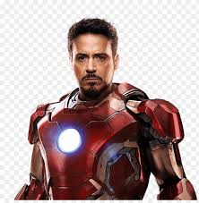

 Iron man is my favorit super hero because 1 he actuly dosent have any super powers it is just his souit that he made that gives him powers. 2 i also like that he has a quote on quote disability because of the arc reactor in his chest to prevent srapnel from killing him by puncturing his heart. 3 i also like his attitued twards things. 4 he is very smart and i like that he learns from his mistakes. finaly i like how he shows off his wepeosns.
Iron Man is the superhero persona of Anthony Edward "Tony" Stark, a businessman and engineer who runs the weapons manufacturing company Stark Industries. When Stark was captured in a war zone and sustained a severe heart wound, he built his Iron Man armor and escaped his captors. Iron Man's suits of armor grant him superhuman strength, flight, energy projection, and other abilities. The character was created in response to the Vietnam War as Lee's attempt to create a likeable pro-war character. Since his creation, Iron Man has been used to explore political themes, with early Iron Man stories being set in the Cold War. The character's role as a weapons manufacturer proved controversial, and Marvel moved away from geopolitics by the 1970s. Instead, the stories began exploring themes such as civil unrest, technological advancement, corporate espionage, alcoholism, and governmental authority.
Iron Man is a 2008 American superhero film based on the Marvel Comics character of the same name. Produced by
Marvel Studios and distributed by Paramount Pictures,[a] it is the first film in the Marvel Cinematic Universe
(MCU). Directed by Jon Favreau from a screenplay by the writing teams of Mark Fergus and Hawk Ostby, and Art
Marcum and Matt Holloway, the film stars Robert Downey Jr. as Tony Stark / Iron Man alongside Terrence Howard,
Jeff Bridges, Gwyneth Paltrow, Leslie Bibb, and Shaun Toub. In the film, following his escape from captivity by
a terrorist group, world-famous industrialist and master engineer Stark builds a mechanized suit of armor and
becomes the superhero Iron Man.
paragraph 2 and 3 info is from wikipedia !